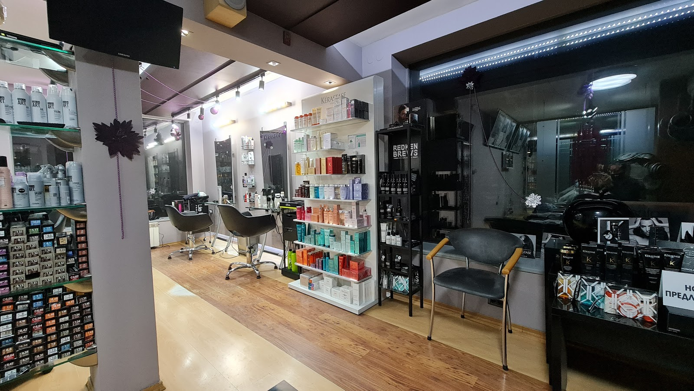

Подстригване според лицето
Клиентите често отбелязват усета към форма, детайл и прическа, която стои естествено.
Фризьорски салон в центъра
Подстригване, цвят и стайлинг на ул. „д-р Петър Берон“ 8 — с внимание към формата на косата, удобството и крайния резултат.

Защо клиентите го търсят
Клиентите често отбелязват усета към форма, детайл и прическа, която стои естествено.
Работа с дамски прически, цвят, сешоар и официално оформяне за по-завършен вид.
Салонът е на ул. „д-р Петър Берон“ 8, близо до централни улици и градски транспорт.
Работа и атмосфера
Използваме само най-силния намерен резултат като основна визия.
Адресът и контактите са ясно изведени за бързо записване.
Слабите и повтарящи се кадри са махнати от страницата.
Услуги
За конкретен час, цена и подходяща услуга най-сигурно е да се обадите директно в салона.
Форма, дължина и финален вид според косата и предпочитанията.
Професионална работа с цвят и поддръжка на косата.
Стайлинг за ежедневен или по-специален повод.
Работно време
Клиентски отзиви
„Това е най-добрият фризьор, който някога съм посещавала. Знае много добре на всяка физиономия какво би отивали.“
Konstansa„Уникален екип, изключителен професионализъм, а Васил Атанасов е велик! Правят чудеса.“
Румяна„Когато енергията и уменията работят в синхрон, се раждат шедьоври! Благодаря за отношението!“
Latinka„Любимия ми фризьорски салон! Чистота, отношение, атмосфера — всичко е перфектно!“
SofiaЗаписване
За подстригване, цвят или сешоар се свържете директно със салона.
Адрес
Васил Атанасов
ул. „д-р Петър Берон“ 8, 1142 София
+359 2 980 0987